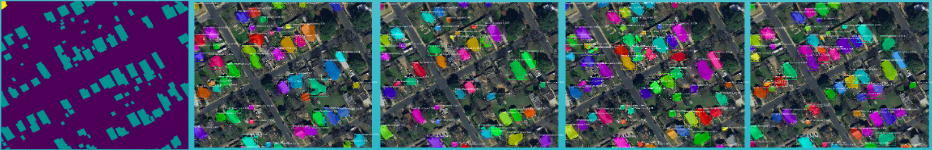

The City of Austin hires geographers to manually annotate objects of interest from satellite imagery of Austin, TX every other year. Not only is this process labor and resource intensive, but it is expensive as well, costing the city roughtly $500,000 per dataset that they want to create. They granted us access to three years of manually annotated data, which we converted to the MS COCO annotation format so that we could train the MaskRCNN algorithm to automatically detect and segment these objects of interest. Below are examples of models that we have trained juxtaposed to the ground truth masks on the left.
To efficiently create and evaluate our models, we developed an easy to use pipeline for MaskRCNN located at this repo. It is a toolkit that allows the user to rapidy train models by specifying what GPU they want to train on. For example, if you have 8 GPUs, you can train 8 models at the same time.
For a more in depth look at our process for this project, please refer to this presentation here. NSF REU Poster Presentation pdf.
Geospatial analysis is the process of manipulating geographic data as it pertains to terrain, topology, geomorphology, temporal locality, and history, and applying such data against a geographic model to infer upon or better understand an objective reality. Applications of geospatial analysis include, but are not limited to, land use and storm water management on fecal coliform contamination \cite{vitro_bendor_jordanova_miles_2017}, emissions assessment of municipal landfills \cite{el-fadel_abi-esber_salhab_2012}, preconstruction planning of new development with a focus on graceful spatial integration \cite{doi:10.1061/(ASCE)EI.1943-5541.0000257}, and other areas of logistics and risk management, especially in urban settings. Given the broad spectrum of use cases and needs for such a form of analysis, it is imperative that the acquisition and logical ordering of geographic data be streamlined and economical for all entities in need of such data. In this paper, we present a system that detects objects of interest from temporal overhead imagery by means of deep convolutional neural networks and region proposals, and then converts those detections into a format that can be read and manipulated in geodatabase programs like ArcGIS or QGIS. We analyze nine trained models and infer on City of Austin temporal overhead imagery for the City of Austin Watershed Department and show how modifications to the mask layer of each model affects performance. We also discuss the feasibility of deploying a state of the art deep learning model onto the Nvidia Jetson TX2 mobile platform as well as the motivations for acquiring such a system. Code is publicly available as referenced throughout the paper.
Brent Redmon
Undergraduate Research Assistant
Brent's research focuses on satellite imagery object detection on edge.
Constance Xu
REU Student, Stevents University
Feasibility of deploying deep learning on NVIDIA JETSON XT2